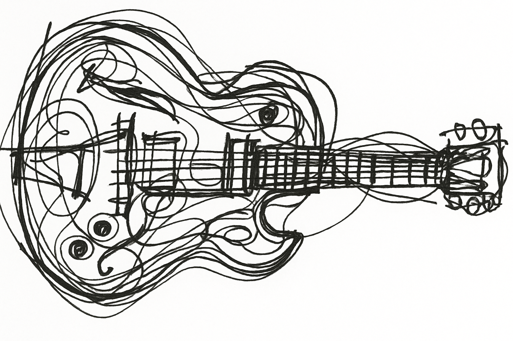

 Moonglow
Conceptos: |
|
| Intervalos: | Distancia entre notas. |
| Alteraciones: | Modificaciones sobre la altura de una nota. Ej: Sol# (# -> "sostenido"), Sib, Mib (b -> "bemol") El # sube 1/2 tono El b baja 1/2 tono |
| Melodía: | Sucesión ordenada de notas. |
| Acorde: | Conjunto de 2 o más notas tocadas al unísono. |
Formación de acordes:(Superponiendo terceras se da lugar a las triadas. Se parte desde la tónica/Raíz.) Ej: Do su 3era es Mi y la terccera de Mi es Sol. Por lo tanto de Do mayor su triada se forma por 1°(DO) 3°(MI) y 5°(SOL). |
Tipos de Triadas: |
|
| Mayor: | (T, 3°, 5°) -> Ej: DO, MI, SOL |
| Menor: | (T, 3°b, 5°) -> Ej: Do, MIb, SOL |
| Aumentada: | (T, 3°, 5°#) -> Ej: DO, MI, SOL# |
| Disminuida: | (T, 3°b, 5°b) -> Ej: DO, MIb, SOLb |
Cuatriadas: |
|
| (Se forman agregando una septima a las triadas, superponiendo una 3° a la 5°) | |
| Mayor Septima: | (T, 3°, 5°, 7°) -> Ej: DO, MI, SOL, SI Ej -> Cmaj7 |
| Menor Septima: | (T, 3°b, 5°, 7°b) -> Ej: Do, MIb, SOLb, SI Ej -> C-7 |
| Dominante Septima: | (T, 3°, 5°, 7°b) -> Ej: DO, MI, SOL, SIb Ej -> C7 |
| Semi-disminuida Septima: | (T, 3°b, 5°b, 7°b) -> Ej: DO, MIb, SOLb, SIb Ej -> C-7b5 o Cø7 |
| Disminuida Septima: | (T, 3°b, 5°b, 7°bb) -> Ej: DO, MIb, SOLb, SIbb (A) Ej -> Cdim7 o C°7 |
Escala Mayor de Do:Si seguimos el concepto de superposición de 3° y lo aplicamos a cada nota de la escala, obtendremos lo siguiente: Entre la tónica y la tercera deben haber 2 tonos de distancia Entre la tónica y la quinta deben haber 3+1/2 tonos de distancia. |